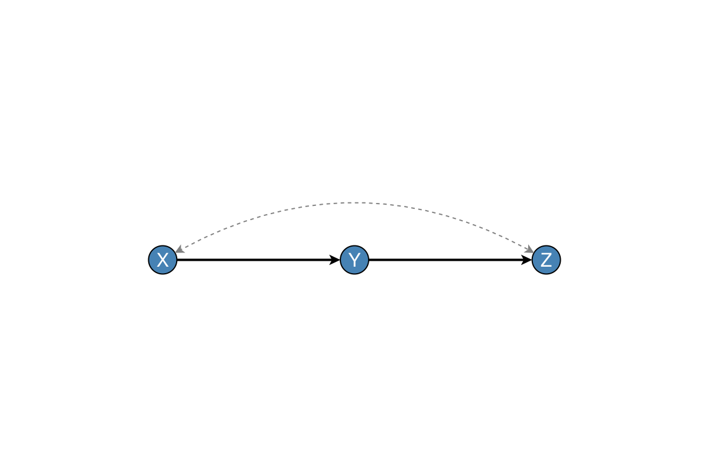
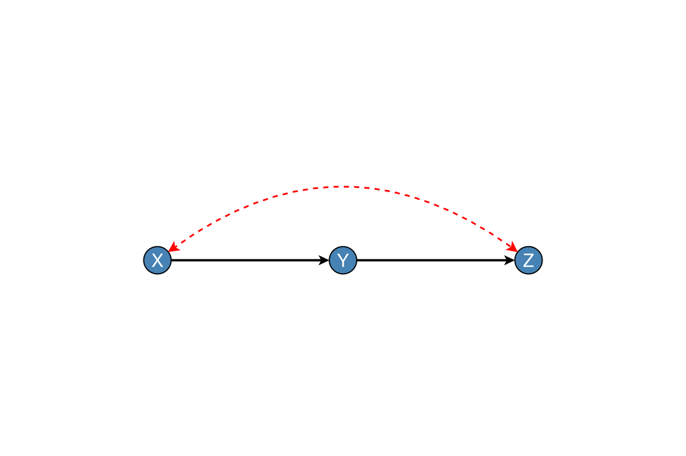
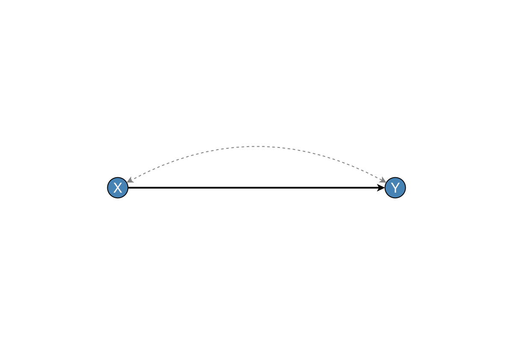
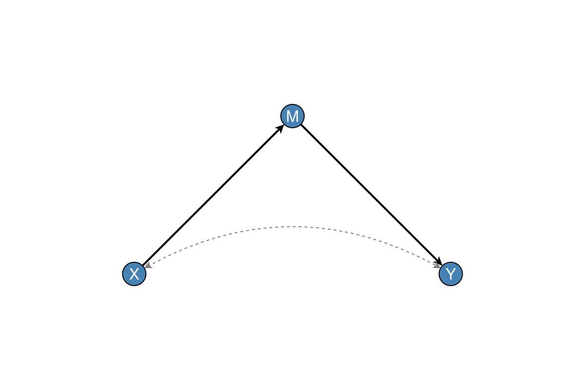
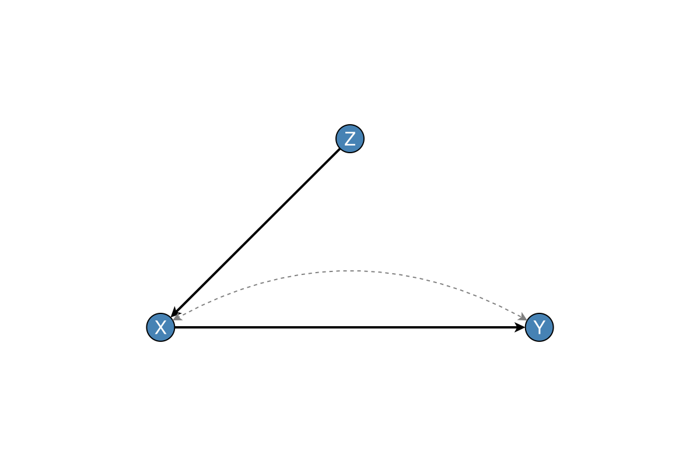
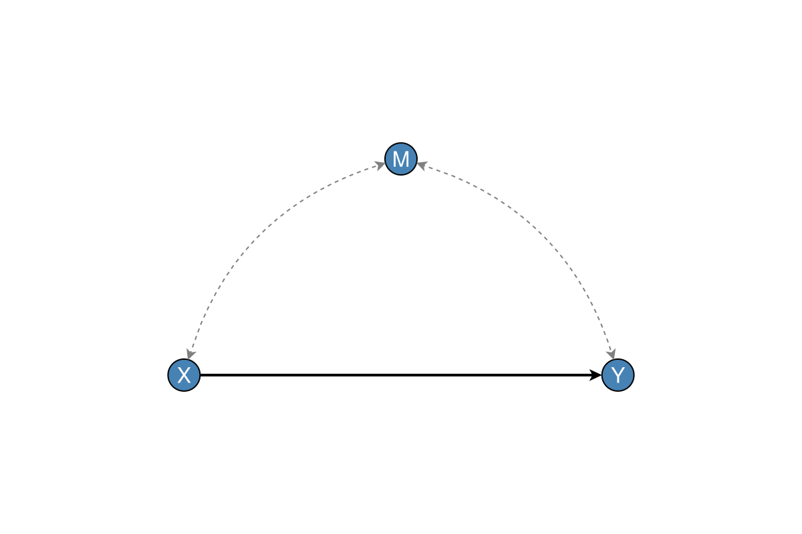

Bidirected Edges
Bidirected edges (↔) represent unmeasured common causes (latent confounders) in causal diagrams.
The MixedGraph Type
MixedGraph supports both directed (→) and bidirected (↔) edges:
using Graphs, DAGMakie, CairoMakie
# Create empty mixed graph
mg = MixedGraph(3)
# Add directed edges
add_directed_edge!(mg, 1, 2) # X → Y
add_directed_edge!(mg, 2, 3) # Y → Z
# Add bidirected edge (unmeasured confounding)
add_bidirected_edge!(mg, 1, 3) # X ↔ Z
fig, ax, p = dagplot(mg, nlabels = ["X", "Y", "Z"])
fig
Creating Mixed Graphs
From Scratch
mg = MixedGraph(3)
add_directed_edge!(mg, 1, 2)
add_bidirected_edge!(mg, 1, 2)From Edge Lists
mg = mixed_graph(3,
[(1, 2), (2, 3)], # Directed edges
[(1, 3)] # Bidirected edges
)From Existing DiGraph
g = SimpleDiGraph(3)
add_edge!(g, 1, 2)
add_edge!(g, 2, 3)
mg = MixedGraph(g, [(1, 3)]) # Add bidirected X ↔ ZCustomising Bidirected Edges
fig, ax, p = dagplot(mg,
nlabels = ["X", "Y", "Z"],
bidirected_color = :red,
bidirected_width = 1.5,
bidirected_style = :dash,
bidirected_curvature = 0.4,
bidirected_arrow_size = 10,
)
fig
Common Confounded Patterns
DAGMakie provides convenience functions for common confounded structures. Each uses a pedagogical default layout so bidirected arcs are not obscured; pass layout=... to override.
Simple Confounding
fig, ax, p = dagplot_confounded(["X", "Y"])
fig
Frontdoor Criterion
fig, ax, p = dagplot_frontdoor(["X", "M", "Y"])
fig
Instrumental Variable with Confounding
fig, ax, p = dagplot_iv_confounded(["Z", "X", "Y"])
fig
M-Bias
fig, ax, p = dagplot_m_bias(["X", "M", "Y"])
fig
Graph Constructors
Get the underlying mixed graph objects:
mg, labels = confounded_graph(["X", "Y"])
mg, labels = frontdoor_graph(["X", "M", "Y"])
mg, labels = iv_confounded_graph(["Z", "X", "Y"])
mg, labels = m_bias_graph(["X", "M", "Y"])Querying Bidirected Edges
# Check if bidirected edge exists
has_bidirected_edge(mg, 1, 2) # true/false
# Get all bidirected edges
bi_edges = bidirected_edges(mg) # Set of (i, j) tuples
# Count bidirected edges
n = num_bidirected_edges(mg)